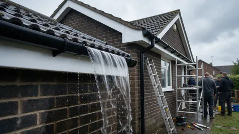

Generated photo
Generated photoGenerated for this demo. Not a photograph of a real job.
The question is not the gutter
People ring up having already decided between a repair and a new roofline. The decision that actually matters comes first: what has failed, and why. A gutter that has dropped because the board behind it is soft is a different job from the same gutter dropped because somebody set the brackets too far apart. They look identical from the garden.
So the honest order is: find out what has gone, then decide how much of it to do. Anybody who quotes a full roofline without taking a proper look at the timber is guessing, and anybody who quotes a repair without looking at the board behind the brackets is too.
When a repair is the right answer
- One joint dripping and the rest of the run dry. A seal or a union. An hour or two, and the right job even on a fairly old run.
- One cracked or split length. Out and back in, as long as the profile can still be matched.
- A section that has dropped, with sound timber behind it. Rehung to a string line on new brackets, fall put right.
- Overflowing with everything else sound. Clean it, clear the outlet, run water through it and see. Far more gutters are dirty than finished.
- A downpipe off the wall. New clips into the mortar joints and a look at what wet the wall in the first place.
When replacing is the honest answer
- The fascia is soft. If a screwdriver goes into the board, nothing screwed to it will hold for long. This is the one that decides most full jobs.
- Several joints have gone on the same run. They are the same age and the same plastic. Fixing them one at a time over three years costs more than doing the run.
- The plastic has gone brittle and chalky. Thirty year old uPVC cracks when you handle it, so a repair often creates the next leak a length along.
- The profile cannot be matched. A near miss seals badly and looks worse than a new run on that elevation.
- The gutter is simply too small for the roof. No repair changes the volume. A deeper profile or a second outlet does.
The access argument, which is the real one
Here is the part that catches people out. On most roofline jobs a serious slice of the cost is getting to it safely: towers, scaffold, and the time to put it up and take it down. That cost barely changes whether you do one elevation or three while it is standing.
Which means the sensible answer sometimes is not the cheapest today. Doing the front now and the back and the gable in two years means paying for access twice, and living with a house where one side matches and the other does not. If the rest genuinely has ten years in it, do the front and leave it. If it has two or three, doing the lot on one scaffold is usually less money in total.
Ask for it both ways on the quote. A firm that will show you the staged version and the all at once version, with the access priced separately so you can see it, is giving you the information to decide. One that only shows the big number is not.
The shortcut to be careful of
Capping: a thin uPVC skin screwed over the old timber. It costs less, it goes on faster, and on the day it looks the same as a full replacement from the ground. What it does is hide whatever the old board is doing and skip the one chance anybody gets to look at the edge of your roof.
If a quote is noticeably cheaper than the others, that is often the reason, and it is a fair thing to ask straight out: is the old board coming off? On sound dry timber capping can be reasonable. The trouble is that you cannot tell from the ground, and the firm quoting is the one who can.
A plain way to decide
Three questions, in order. One: has the timber gone, or not? That is a screwdriver and two minutes up a ladder, and it decides more than anything else. Two: is this one failure or the first of several, which is mostly a question of age. Three: what does the access cost, and does that change whether to do the rest at the same time?
Answer those three and the right job is usually obvious. Any firm worth having will walk you through all three without being asked, and will say the word repair out loud when a repair will do.
Written for this demo from general trade knowledge. It is not advice on your property, and anything structural or on the roof itself wants somebody looking at the actual house.
More advice
While you are here.

Generated photoWhy gutters overflow, and it is not always leaves
Four causes, in the order they actually turn up, and why the cheapest one to fix is the one to rule out first.
 Generated photo
Generated photoFascias and soffits: what they do
Two boards most people have never looked at properly, one of which is keeping the air moving in your loft.
Want somebody to look at the actual run?
Tell us which side of the house and your postcode. Twenty minutes with a ladder beats any article.